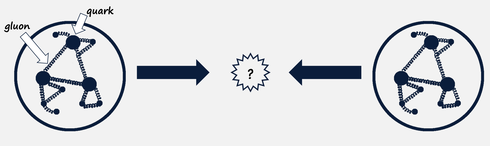
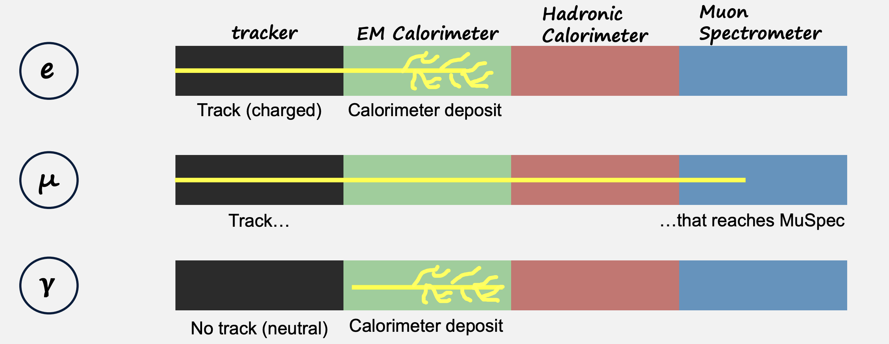
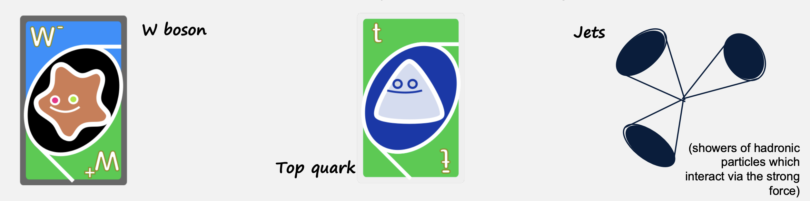
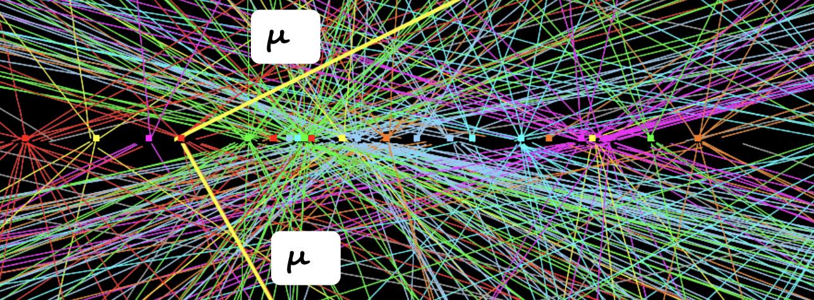
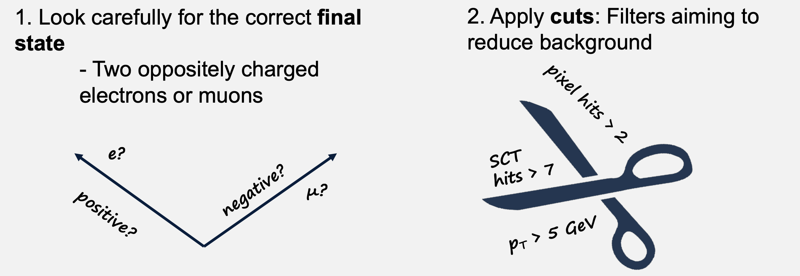
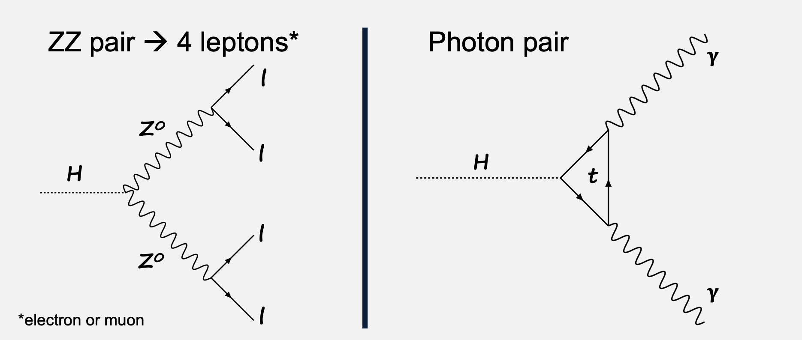

Intro to finding Z & Higgs bosons#
Protons colliding at the LHC are made of quarks and gluons – these interact to create new particles

The Z^0 boson#
Based on the information shown in the image, this appears to be describing the Z^0 boson, which is a fundamental particle that mediates the weak nuclear force. Let me mark this down with proper formatting: Z^0 Boson and Weak Nuclear Force
The Z^0 boson exchanges the weak nuclear force, alongside the W^+ and W^- bosons It serves as the force carrier responsible for radioactive decay While similar to a 'heavy photon', it has the unique ability to interact with neutral particles like neutrinos Key characteristics that distinguish it from photons:
- Mass: 91 GeV
- Extremely short lifetime: 3\times 10^{-25} seconds
This would be considered a neutral current carrier in weak interactions, as opposed to the charged current interactions mediated by the W^+ and W^- bosons. The massive nature and incredibly short lifetime of the Z^0 boson help explain why the weak nuclear force operates only at very short distances, unlike the electromagnetic force carried by the massless photon.
The two easiest Z^0 decays to see in ATLAS are:

Both decay products are stable enough to see in the ATLAS detector
Particle Identification - Signal#
We can identify a particle based on the set of signals it leaves in ATLAS

HOWEVER, other interactions can make our ‘signal events’ difficult to spot
Background Events#
- When protons collide, all sorts of particles can be created, not just Higgs and Z
- Some of these can have similar decay products as our signal events

Pile-up#
- The LHC collides protons in ‘bunches’ of 100000000000 (1.1\times10^{11}) every25 ns
- Uninteresting events take place at the same time as something interesting

What can we do?#

The Higgs boson#
Final Standard Model particle to be discovered, in 2012 by ATLAS and CMS - Couples to other particles to give the mass - Very heavy: Mass = 125 GeV
Higgs Decays#
The two easiest Higgs decays to see in ATLAS are:

Info
Other decays e.g. H \longrightarrow bb are more common but also harder to spot – backgrounds!
We’ve found our leptons, but how do we know they’ve come from the Z of the Higgs?
By using Invariant mass is a unique fingerprint for each particle!
You may be familar with:
E = mc^2 , with a more complete version look like this: E = \sqrt{(pc)^2 + (m_0c^2)^2},
where p is momentum and m_0 is invariant mass.
- Invariant mass is conserved \rightarrow total m_0 of the decay products is the same as the particle which has decayed
- To reconstruct e.g. the Z^0 mass:
- Sum the energy (E) of the decay leptons (measured in ECAL or muon spectrometer)
- Sum the momentum (p) of the decay leptons (tracker)
- Put results into formula above